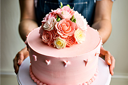
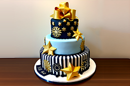
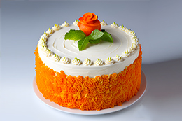

Cakes for Special Events

Pink Rose Cake
Indulge in the Pink Rose Cake, a confection that embodies the tender sentiments and eternal beauty of a blooming pink rose.
It's a sweet testament to the love shared between two souls, making your wedding day a truly unforgettable experience.
Cakes for the Holidays

New Year's Sparkle Cake
The New Year's Sparkle Cake reveals a cascade of vibrant colors within, symbolizing the vibrant possibilities and joy of the upcoming year.
The explosion of flavors includes hints of decadent chocolate and a touch of champagne essence, ensuring a truly indulgent experience.
Classic Cakes

Classy Carrot Cake
what truly sets our Classy Carrot Cake apart is its luscious cream cheese frosting, a velvety masterpiece that effortlessly complements the delicate flavors of the cake.
Its smooth and creamy consistency melts in your mouth, leaving a lingering sweetness that enhances the overall experience.